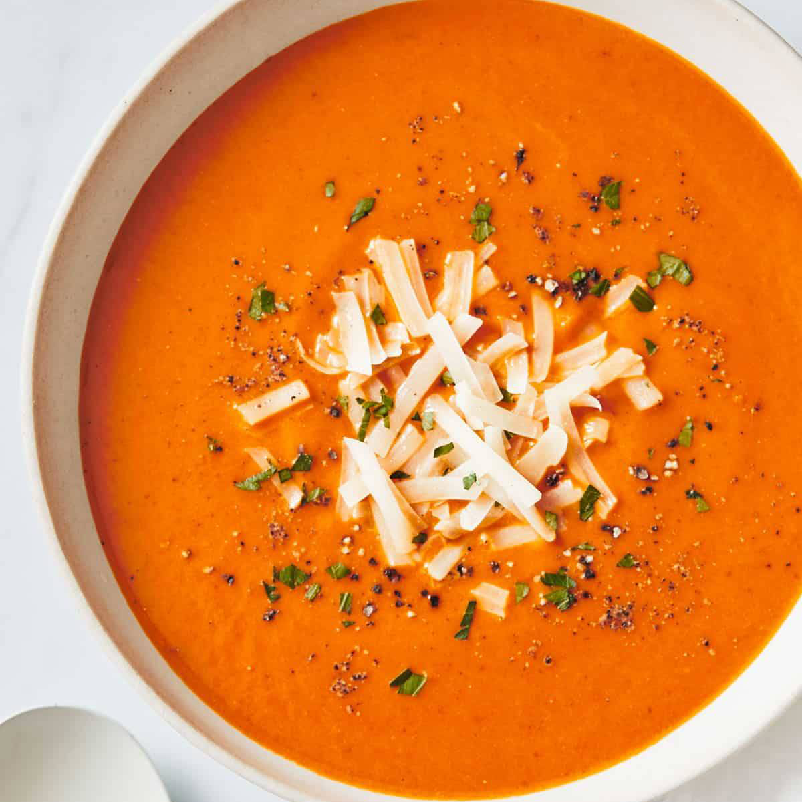

tomato Soup
Commercially prepared tomato soup is available in a variety of forms including preserved, condensed and in dehydrated powder form.
Industrial tomato soup may be canned or come in a large drink carton or bag."Tomato" ranks among the top three flavors of soup produced by the Campbell Soup Company.[7]
Industrial tomato soup
Industrial tomato soup is primarily tomato puree:
that is, tomato paste and water with a few other ingredients added to enhance flavor and physical properties of the food. The tomato is a high acid food therefore,
"the tomato is not considered a high-risk food, as the pH of the fruit generally ranges from pH 4.2–4.9 with an average of about 4.5. At this point pathogens are unlikely to grow".
However, there are still some foodborne pathogens that can pose as a major problem when it comes to the safety of the food and its shelf life stability. The main concern when canning is anaerobic microorganisms that produce toxins like Clostridium botulinum.
Even though the tomato is a high acid food it still falls in the range where this organism can grow and produce toxin pH 4.6–8.5 with an optimum growing temperature between 30–40 °C and a maximum temperature of 50 °C. Even if the bacteria are killed they release heat resistant spores that if they start to multiply become a threat.
prep time
30min.
cook time
15min.
servings
servings
Tags : Soups
Breakfast
Food
Beef
1. First, melt 2 tablespoons of butter in a pot on medium-low heat. The butter should melt and slightly simmer, but not burn.
2. Next, add 2 bay leaves and fry them in the butter for a few seconds until lightly browned, but again, not burned.
3. Add ½ teaspoon of finely chopped garlic and ⅓ cup of finely chopped onions to the pan, and stir.
4. Sauté and stir until the onions become translucent, about 3 to 4 minutes.
5. Now add the fresh chopped tomatoes (500 grams, or 6 to 7 medium tomatoes), and a hearty pinch of salt to taste.
6. Mix well.
7. Cover and simmer on a low to medium-low heat until the tomatoes soften, about 8 to 10 minutes
8. Stir occasionally and keep an eye on the consistency of the mixture. If the liquids dry up and the tomatoes begin to stick, then add a splash of water at a time and stir. But be sure to not add too much water or you’ll dilute the delicious flavors!
After the tomatoes have softened, remove from the heat and cool. Take out the bay leaves and discard.
9. Once the tomato mixture has cooled to a point that’s safe to work with, add it to a blender jar. You could also use an immersion blender.
10. Blend to a lovely smooth consistency to make the tomato soup puree.
11. You have the option of straining the puree through a strainer for an even smoother soup, but this step isn’t necessary.
13. If you do choose to strain the puree, move a spoon through it so that everything is strained except the seeds.
Step 3-Simmering Soup Further
14. Pour the tomato puree back into the pot, and add 1 cup water. Stir well. Depending on the consistency you prefer, you can add a little less or more water – taking care that the soup does not become very thick or watery and runny.
15. Next, add 1 teaspoon of raw sugar or white sugar.
16. Mix the sugar in the tomato soup very well.
17. Simmer on low heat until the tomato soup becomes hot, but is not boiling.
18. Season with freshly crushed black pepper, and stir.
19. Turn off the heat and stir in, 1 to 2 tablespoons heavy cream, depending on desired richness.
20. Mix well, taste, and add more salt and pepper if needed.
Step 4-Making Bread Croutons
21. When the tomato mixture is cooling, you can make the bread croutons. Mix together ½ cup bread cubes, 1 tablespoon olive oil, 1 light pinch of salt and 1 to 2 pinches of freshly crushed black pepper in a baking tray. Toss to coat.
22. Bake in an oven preheated to 200 degrees Celsius (400 degrees Fahrenheit), for approximately 3 to 5 minutes. Or, you can toast the bread cubes in a skillet until golden brown on all sides.
23. I like to make one or two sides even darker for a bit more crunch.
Step 5-Step 6 – Serving Tomato Soup
24. When you’re ready to enjoy, pour the hot tomato soup into bowls. Add the croutons directly on top of the soup, or serve on the side. You can also garnish the tomato soup with a bit of freshly chopped parsley or coriander leaves (cilantro) or basil or mint sprigs.
This soup is great served fresh, but also keeps well in a sealed container in the fridge for up to 4 days.